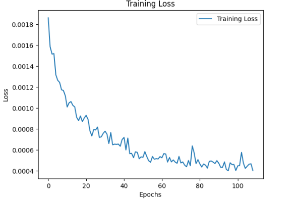
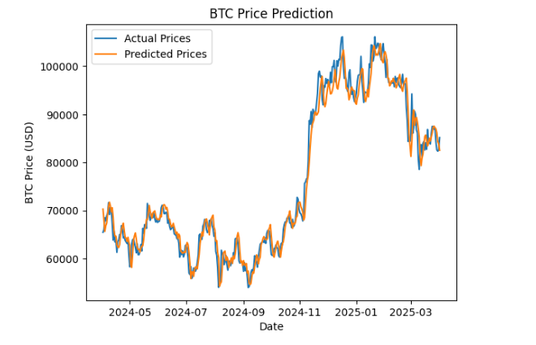

Bitcoin Predictor
Project Type: SUTD Deep Learning Project
Project Date: Jan 2025 – May 2025
Project Overview
Designed and implemented an LSTM-based deep learning model in PyTorch to predict the next-day closing price of Bitcoin. The model uses 10+ years of historical data with engineered time-based features like day of the week and month. Achieved a test MAPE of ~2.48% and RMSE of ~$2519.98, demonstrating solid short-term forecasting capability for financial time series.
Key innovations include:
- Feature Engineering: Incorporated cyclical features such as day of the week and month to help the model learn temporal trends in trading behavior.
- Model Design: A 3-layer LSTM with 256 hidden units and a final fully connected layer was used to map sequence outputs to the next day’s closing price.
- Data Strategy: Utilized a 30-day lookback window with normalization and sequence generation tailored for time series forecasting.
- Real-world Simulation: An additional script that simulates how a person would use the LSTM model in a real world situation


Key Contributions
- Research: Evaluated various approaches to time series forecasting and identified LSTM as the most suitable model for next-day Bitcoin price prediction.
- Data Curation and Preprocessing: Curated and preprocessed a time series dataset of over 4,000 daily Bitcoin records, including data cleaning, normalization, sequence generation, and extraction of time-based features to ensure high-quality model inputs.
- Model Training: Conducted extensive feature engineering and hyperparameter tuning, incorporating cyclical time-based features and optimizing model parameters (lookback window, layers, hidden units, dropout) to enhance training efficiency and predictive accuracy.
Skills and Tools Used
GIT
Python
Jupyter
PyTorch